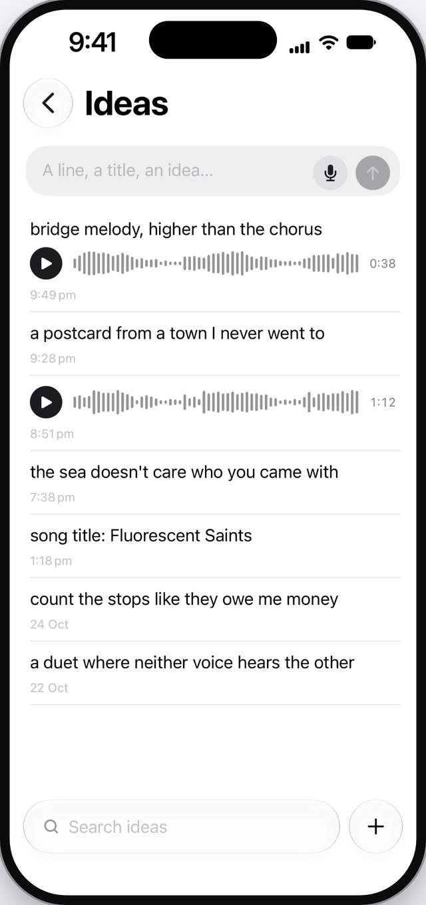
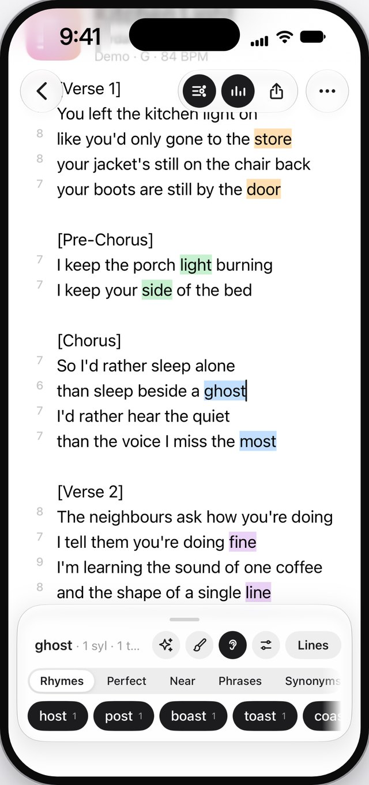
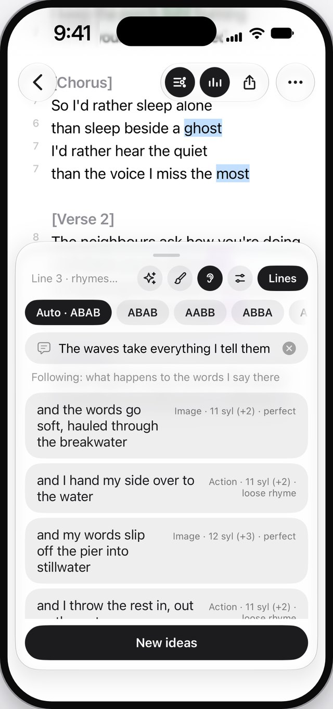
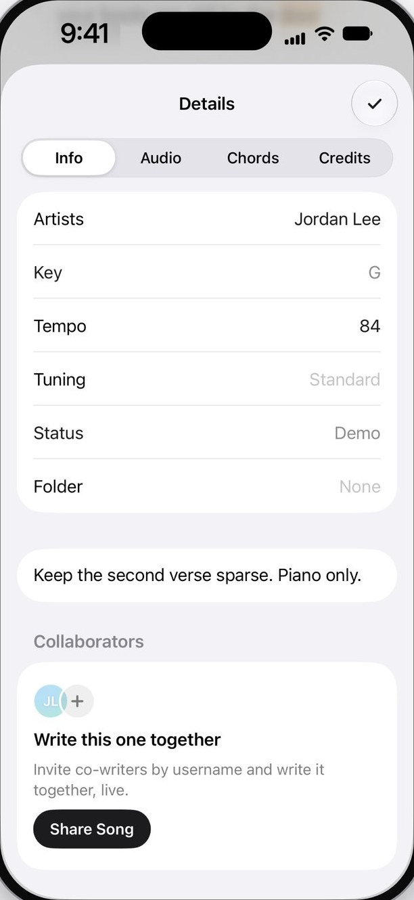
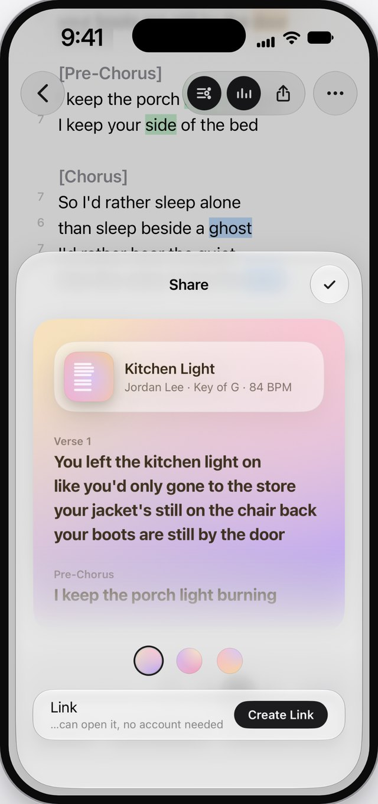
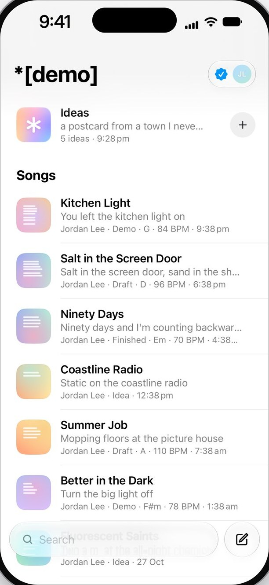

*[demo]
From first line to finished song.
ExploreEverything a song needs.
Nothing it doesn’t.
Your lyrics, your ideas and your demos in one place, on your iPhone and your Mac.






Lyric sync
Your demo plays with the words lit up in time.
Rhymes
Every rhyme, coloured.
so I’d rather sleep alone
than sleep beside a ghost
I’d rather hear the phone
than the voice I miss the most
ghostcoasttoastalmosthost
Free to write.
Writing, rhymes and ideas cost nothing, for as long as you like. Pro adds co-writing, demos and more.
Share links
Sends like it’s already out.
A proper preview in Messages, WhatsApp and Instagram, coloured from your artwork.
Perform mode
Big lyrics
for the stage.
Everywhere
iPhone. Mac. Browser.
The same songs on all of them, synced in about a second, and they work offline.
Write something today.
Writing, rhymes and ideas are free. Pro adds co-writing, demos and more, with a week free to try it.